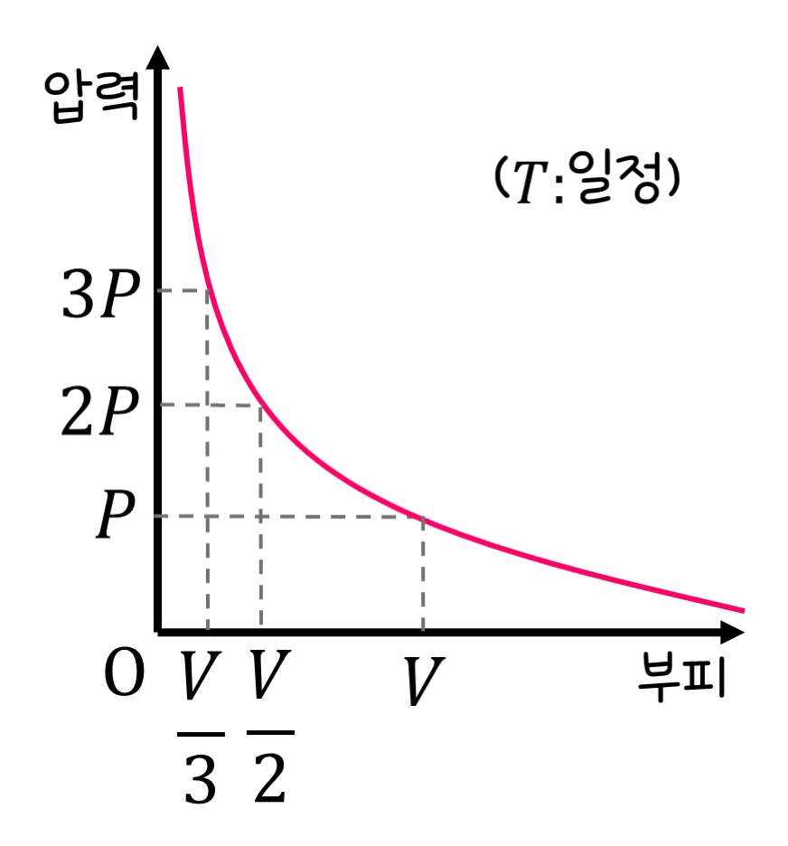

초등 5-6학년 과학 · 여러 가지 기체 · 웹툰 9화 「기체 종합 보고서」
실험에서 피스톤을 누르는 압력을 바꿔 가며 기체의 부피를 재고 ‘압력 × 부피’를 계산했습니다. 압력이 2배가 되면 부피는 절반, 곱은 항상 500으로 일정했습니다. 보일 법칙과 함께 용해·산과 염기·기체 9개 실험을 총정리합니다.
실험 데이터 되짚기
온도가 변하지 않고 기체가 새지 않는다고 가정한 모형값(압력 눈금은 교육용 단위)입니다.
| 압력 눈금 | 1 | 2 | 4 | 5 | 10 |
|---|---|---|---|---|---|
| 부피 | 500 | 250 | 125 | 100 | 50 |
| 압력 × 부피 | 500 | 500 | 500 | 500 | 500 |
압력이 2배면 부피는 절반(반비례)이고 곱은 항상 일정합니다. 그래프는 아래로 휘는 곡선(쌍곡선)입니다.
기체는 아주 작은 알갱이들이 넓은 빈 공간 속을 자유롭게 날아다니는 상태입니다. 그래서 누르면 알갱이 사이가 좁아져 부피가 줄어들고, 놓으면 다시 늘어납니다. 온도가 그대로일 때 기체의 압력과 부피를 곱한 값은 항상 일정합니다. 압력이 2배가 되면 부피는 절반(반비례) — 이것이 보일 법칙입니다. 액체와 고체는 알갱이가 이미 빽빽해서 눌러도 거의 줄지 않고 기체만 이렇게 크게 줄어듭니다. 압력이 일정할 때 온도가 높아지면 부피가 늘어납니다.
교재 그림
압력 2배면 부피 ½, 3배면 ⅓

온도(T)가 일정할 때 압력이 P → 2P → 3P로 커지면 부피는 V → V/2 → V/3로 줄어 그래프가 아래로 휘는 곡선이 됩니다. 이 실험의 압력 눈금 1·2·5와 부피 500·250·100도 같은 규칙이에요.
움직여 보기
피스톤을 세게 누르면 — 알갱이 사이가 좁아진다
압력을 2배로 올리면 부피는 절반 — 알갱이 수는 그대로인데 빈틈이 줄어 벽에 더 자주 부딪혀요. 그래프의 연보라 사각형(압력 × 부피) 넓이가 늘 같은 것도 확인해 보세요. 온도가 일정하고 기체가 새지 않을 때의 모형입니다.
압력은 ‘넓이 1칸당 누르는 힘’입니다. 같은 힘이라도 좁은 피스톤을 누르면 압력이 더 큽니다. 이 실험의 ‘압력 눈금’은 피스톤을 누르는 힘에 바깥 공기가 누르는 압력까지 더한 값입니다. 기체 알갱이는 벽에 부딪히며 밖으로 밀어내는데, 부피가 줄면 알갱이가 촘촘해져 더 자주 부딪히고 그래서 안쪽 압력이 커져 바깥에서 누르는 압력과 다시 균형을 이룹니다. 보일 법칙은 온도가 일정하고 기체가 새지 않을 때만 성립하며, 빨리 누르면 기체가 뜨거워져 부피가 계산보다 조금 큽니다. 실제 압력 단위는 기압(atm)이나 파스칼(Pa)입니다.
잠수부의 공기통은 공기를 약 200배 압력으로 눌러 작게 담은 것이고, 과자 봉지가 높은 산에서 빵빵해지는 것은 바깥 압력이 낮아져 봉지 속 기체가 늘어나기 때문입니다. 자전거 펌프·주사기·에어백이 모두 기체를 누르고 늘리는 성질을 이용합니다.
온도 일정 · 기체가 새지 않음 · 압력 2배 → 부피 ½ · 온도 ↑ → 부피 ↑ (압력 일정)
“어? 기체는 누르면 부피가 줄어드네?” “맞아. 기체는 압력을 가하면 부피가 줄어들고, 온도가 높아지면 부피가 늘어나는 성질이 있어. 이런 기체의 성질은 잠수부의 압축 공기통, 자동차 에어백, 과자 봉지 포장 등 우리 생활 곳곳에서 활용돼.”
웹툰 9화 · 제로가 주사기 피스톤을 눌러 기체 부피가 줄어드는 걸 보여주는 장면
“나는 산소! 물질이 타는 것을 도와줘.” “나는 이산화 탄소! 불을 꺼뜨리고, 석회수를 뿌옇게 만들어.” “나는 질소! 공기의 대부분을 차지하고, 반응을 잘 안 해.” “나는 수소! 제일 가볍고, 폭발할 수 있어서 조심해야 해.”
웹툰 9화 · 랩: “이번 시리즈에서는 물질이 물에 녹는 용해, 성질이 다른 산과 염기, 그리고 눈에 보이지 않는 기체들을 탐구했어.”
500 ÷ 8 = 62.5. 압력이 8배이니 부피는 8분의 1입니다.
압력이 3배에서 1배로 줄어드니 부피는 3배로 커집니다. 그래서 잠수부는 올라올 때 숨을 참으면 안 됩니다(폐 속 공기가 늘어남).